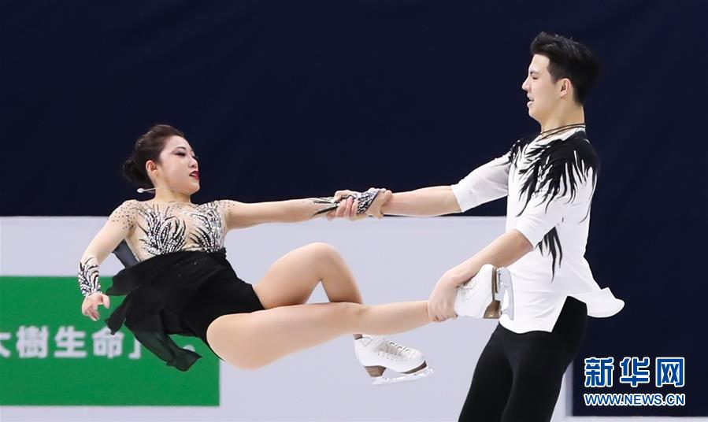

| 起源于花样滑冰，始于20世纪30年代的英国。偏重舞步，强调用动作表达音乐。1937年英国举办首届冰上舞蹈锦标赛，1949年起被列为单独比赛项目。由一男一女配对参赛。比赛按规定舞、创编舞和自由舞的顺序进行，第一天规定舞，第二天创编舞，第三天自由舞。 | ||
| 规定舞 | 创编舞 | 自由舞 |
| 根据规定的音乐、图案、步法和重复次数完成动作。规定舞共有22套，国际滑冰联盟用抽签方法确定两套作为下年度的比赛项目。裁判员根据运动员完成动作的质量和姿势评定技术分和表演分。 | 又称定型舞。运动员按规定的韵律自选音乐，在规定的时间内完成一套自编的舞蹈步法和图案。裁判员根据运动员完成的动作情况评定编排分和表演分。 | 运动员自选音乐，在规定的4分钟内完成由各种步法、托举、小跳、姿势、握法等动作组成的自编舞蹈，裁判员根据运动员完成动作的质量、风格和创新等评定技术分和艺术印象分。冰上舞蹈的评分和确定名次的方法同单人滑。 |
|  | ||